Building Blocks for GFs¶
#@title Install Packages
# %%capture
try:
import sys, os
from pyprojroot import here
# spyder up to find the root
root = here(project_files=[".here"])
# append to path
sys.path.append(str(root))
except ModuleNotFoundError:
import os
os.system("pip install objax chex")
os.system("pip install git+https://github.com/IPL-UV/rbig_jax.git#egg=rbig_jax")
# jax packages
import jax
import jax.numpy as jnp
from jax.config import config
# import chex
config.update("jax_enable_x64", False)
import objax
import chex
import numpy as np
from functools import partial
# library functions
from rbig_jax.data import get_classic
from rbig_jax.transforms.parametric.mixture.logistic import InitMixtureLogisticCDF
from rbig_jax.transforms.parametric.mixture.gaussian import InitMixtureGaussianCDF
from rbig_jax.transforms.logit import InitLogitTransform
from rbig_jax.transforms.inversecdf import InitInverseGaussCDF
from rbig_jax.transforms.parametric.householder import InitHouseHolder
from distrax._src.bijectors.sigmoid import Sigmoid
from distrax._src.bijectors.inverse import Inverse
KEY = jax.random.PRNGKey(123)
# logging
import tqdm
import wandb
# plot methods
import matplotlib.pyplot as plt
from matplotlib import cm
import seaborn as sns
import corner
from IPython.display import HTML
sns.reset_defaults()
sns.set_context(context="talk", font_scale=0.7)
%matplotlib inline
%load_ext lab_black
# %load_ext autoreload
# %autoreload 2
INFO:tensorflow:Enabling eager execution
INFO:tensorflow:Enabling v2 tensorshape
INFO:tensorflow:Enabling resource variables
INFO:tensorflow:Enabling tensor equality
INFO:tensorflow:Enabling control flow v2
WARNING:absl:No GPU/TPU found, falling back to CPU. (Set TF_CPP_MIN_LOG_LEVEL=0 and rerun for more info.)
Demo Data¶
from rbig_jax.data import NoisySineDataset, MoonsDataset
from sklearn.preprocessing import StandardScaler
# %%wandb
# get data
seed = 123
n_samples = 1_000_000
n_features = 2
noise = 0.1
n_train = 5_000
n_valid = 1_000
ds = NoisySineDataset(n_samples=n_samples, noise=noise, seed=seed)
# def load_data(n_samples, seed):
# dataset = Dataset2D(n_samples=n_samples, seed=seed)
# data = dataset.load_s_curve()
# return data
data = ds[:n_train]
X_plot = ds[n_train:]
data = StandardScaler().fit_transform(data)
# plot data
fig = corner.corner(data, color="blue", hist_bin_factor=2)
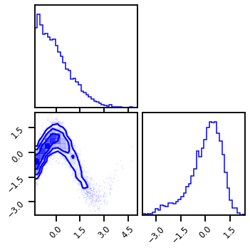
X = jnp.array(data, dtype=np.float32)
DataLoader¶
from rbig_jax.data import GenericDataset, collate_fn
import torch.multiprocessing as multiprocessing
from torch.utils.data import DataLoader
# multiprocessing.set_start_method("spawn")
# initialize dataset
ds_train = GenericDataset(np.array(data))
ds_valid = GenericDataset(np.array(X_plot[n_train : n_train + n_valid]))
# initialize dataloader
batch_size = 256
shuffle = True
train_dl = DataLoader(
ds_train, batch_size=batch_size, shuffle=shuffle, collate_fn=None, num_workers=0
)
valid_dl = DataLoader(
ds_valid, batch_size=batch_size, shuffle=False, collate_fn=None, num_workers=0
)
Model¶
Layer I - Mixture CDF¶
from rbig_jax.trans
# parameters
n_components = 20
n_features = 2
shape = (2,)
key = jax.random.PRNGKey(123)
init_method = "gmm"
init_mixcdf_f = InitMixtureLogisticCDF(
n_components=n_components, init_method=init_method
)
# init_mixcdf_f = InitMixtureGaussianCDF(
# n_components=n_components, init_method=init_method
# )
Layer II - Logit/Inverse CDF Transform¶
# Logit Transformation
init_logit_f = InitLogitTransform()
# init_logit_f = InitInverseGaussCDF()
Layer III - HouseHolder Transformation¶
# Householder Transformation
n_reflections = 10
method = "pca"
# initialize init function
init_hh_f = InitHouseHolder(n_reflections=n_reflections, method=method)
# Layer Params
n_layers = 6
bijectors = []
rng, *layer_rngs = jax.random.split(KEY, num=n_layers + 1)
X_g = X.copy()
# Plotting
plot_layers = True
plot_intermediates = False
if plot_layers:
fig = corner.corner(X_g, color="red", hist_bin_factor=2)
for irng in layer_rngs:
# ======================
# MIXTURECDF
# ======================
# create keys for all inits
irng, icdf_rng = jax.random.split(irng, 2)
# intialize bijector and transformation
X_g, layer = init_mixcdf_f.bijector_and_transform(
inputs=X_g, rng=icdf_rng, n_features=n_features
)
# plot data
if plot_layers and plot_intermediates:
fig = corner.corner(X_g, color="red", hist_bin_factor=2)
# add bijector to list
bijectors.append(layer)
# ======================
# LOGIT
# ======================
# intialize bijector and transformation
X_g, layer = init_logit_f.bijector_and_transform(inputs=X_g)
bijectors.append(layer)
# plot data
if plot_layers and plot_intermediates:
fig = corner.corner(X_g, color="red", hist_bin_factor=2)
# ======================
# HOUSEHOLDER
# ======================
# create keys for all inits
irng, hh_rng = jax.random.split(irng, 2)
# intialize bijector and transformation
X_g, layer = init_hh_f.bijector_and_transform(
inputs=X_g, rng=hh_rng, n_features=n_features
)
bijectors.append(layer)
# plot data
if plot_layers:
fig = corner.corner(X_g, color="red", hist_bin_factor=2)
 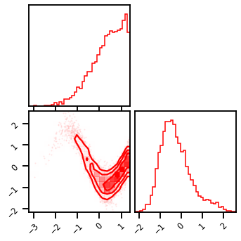
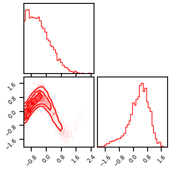
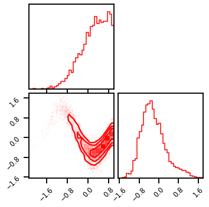
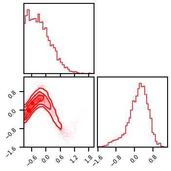
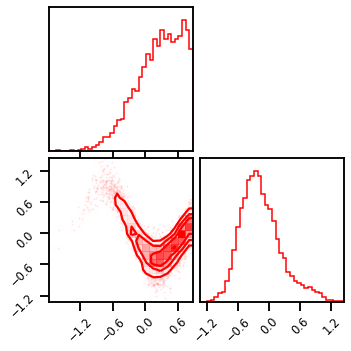
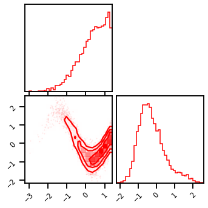
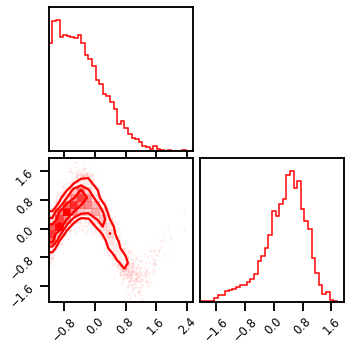
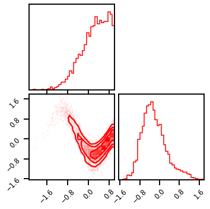
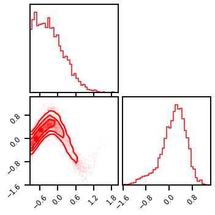
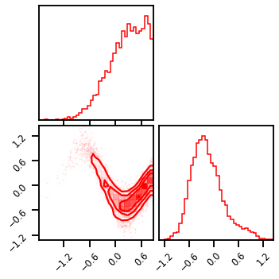

from rbig_jax.models import GaussianizationFlow
from distrax._src.distributions.normal import Normal
# create base dist
base_dist = Normal(jnp.zeros((n_features,)), jnp.ones((n_features,)))
# create flow model
gf_model = GaussianizationFlow(base_dist=base_dist, bijectors=bijectors)
X_g = gf_model.forward(X)
# plot data
fig = corner.corner(X_g, color="red", hist_bin_factor=2)
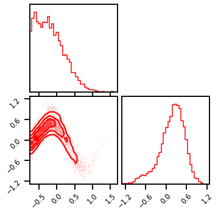
Training¶
from jax.experimental import optimizers
from rbig_jax.training.parametric import init_train_op, init_gf_train_op, train_model
# lr = 0.05
lr = 0.005
optimizer = optimizers.adam(step_size=lr)
jitted = True
# epochs = 150
epochs = 200
# train model
final_bijector, losses = train_model(
gf_model,
train_dl=train_dl,
valid_dl=None,
epochs=epochs,
optimizer=optimizer,
jitted=jitted,
)
100%|██████████| 200/200 [01:08<00:00, 2.90it/s, Train Loss=1.8671, Valid Loss=0.0000]
Results¶
Losses¶
fig, ax = plt.subplots()
ax.plot(losses["train"], label="Training Loss", color="blue")
# ax.plot(losses["valid"], label="Validation Loss", color="orange")
ax.set(xlabel="Iterations", ylabel="Negative Log-Likelihood")
plt.legend()
plt.tight_layout()
plt.show()
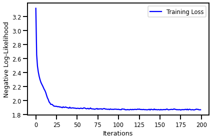
Latent Space¶
%%time
X_trans = final_bijector.forward(data)
fig = corner.corner(X_trans, color="Red")
CPU times: user 755 ms, sys: 41.2 ms, total: 796 ms
Wall time: 678 ms
Inverse Transform¶
%%time
X_approx = final_bijector.inverse(X_trans)
fig = corner.corner(X_approx, color="Blue")
CPU times: user 53.9 s, sys: 3.17 s, total: 57 s
Wall time: 20.7 s
Log Probability¶
%%time
from rbig_jax.data import generate_2d_grid
# general grid points
xyinput = generate_2d_grid(X, 500, buffer=0.2)
# calculate log probability
X_log_prob = final_bijector.score_samples(xyinput)
CPU times: user 7.35 s, sys: 2.42 s, total: 9.76 s
Wall time: 4.01 s
Plot: Original Density¶
# # Original Density
# n_samples = 1_000_000
# n_features = 2
# X_plot = get_classic(n_samples, seed=123)
# X_plot = scaler.transform(X_plot)
# Estimated Density
cmap = cm.magma # "Reds"
probs = jnp.exp(X_log_prob)
# probs = np.clip(probs, 0.0, 1.0)
# probs = np.clip(probs, None, 0.0)
cmap = cm.magma # "Reds"
fig, ax = plt.subplots(ncols=2, figsize=(12, 5))
h = ax[0].hist2d(
X_plot[:, 0], X_plot[:, 1], bins=512, cmap=cmap, density=True, vmin=0.0, vmax=1.0
)
ax[0].set_title("True Density")
ax[0].set(
xlim=[X_plot[:, 0].min(), X_plot[:, 0].max()],
ylim=[X_plot[:, 1].min(), X_plot[:, 1].max()],
)
h1 = ax[1].scatter(
xyinput[:, 0], xyinput[:, 1], s=1, c=probs, cmap=cmap, vmin=0.0, vmax=1.0
)
ax[1].set(
xlim=[xyinput[:, 0].min(), xyinput[:, 0].max()],
ylim=[xyinput[:, 1].min(), xyinput[:, 1].max()],
)
# plt.colorbar(h1)
ax[1].set_title("Estimated Density")
plt.tight_layout()
plt.show()
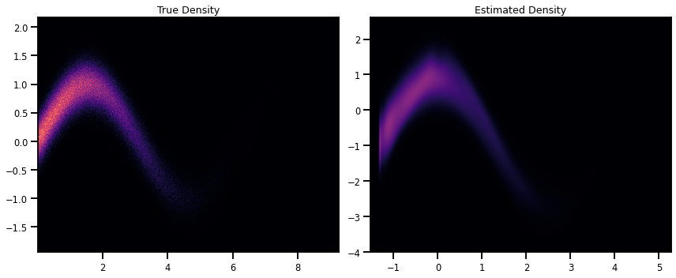
Sampling¶
%%time
n_gen_samples = 100_000
X_samples = final_bijector.sample(seed=123, n_samples=n_gen_samples)
CPU times: user 17min 12s, sys: 3.97 s, total: 17min 16s
Wall time: 3min 23s
# %%time
# # generate samples in the latent domain
# n_gen_samples = 10_000
# X_g_samples = Normal(0.0, 1.0).sample(seed=123, sample_shape=(n_gen_samples, 2))
# X_samples = final_bijector.inverse(X_g_samples)
# X_samples = np.array(gf_model.inverse(X_g_samples.block_until_ready()))
# # inverse transformation
# f = jax.jit(gf_model.inverse)
# X_samples = np.array(f(X_g_samples))
# # This way works too! But slower
# # generate samples in the latent domain
# n_gen_samples = 10_000
# # # inverse transformation
# X_samples = final_bijector.sample(seed=123, n_samples=n_gen_samples)
fig = corner.corner(X, color="blue", label="Original Data")
fig.suptitle("Original Data")
plt.show()
fig2 = corner.corner(X_samples, color="purple")
fig2.suptitle("Generated Samples")
plt.show()
 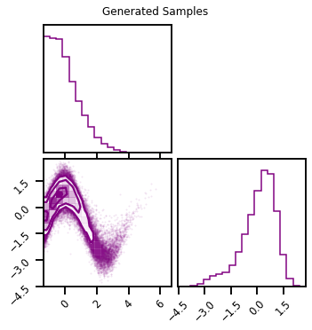
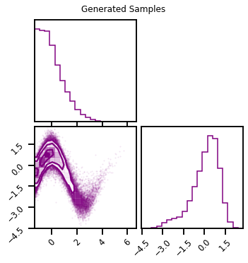
Each Layer¶
X_g = X.copy()
fig = corner.corner(X_g, color="purple")
fig.suptitle("Initial")
plt.show()
for ilayer, ibijector in enumerate(gf_model.bijectors):
X_g = ibijector.forward(X_g)
if (ilayer + 1) % 3 == 0:
fig = corner.corner(X_g, color="purple")
fig.suptitle(f"Block: {(ilayer+1)//3}")
plt.show()
 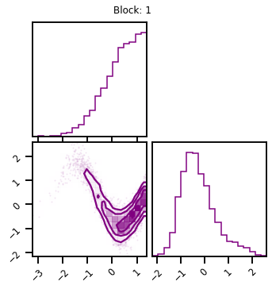
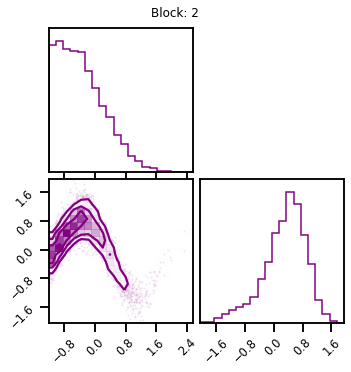
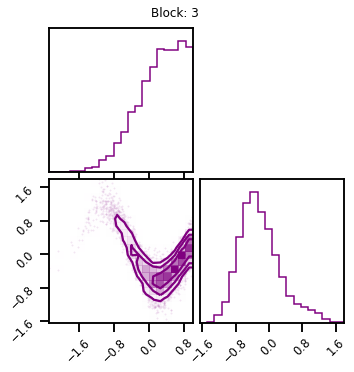
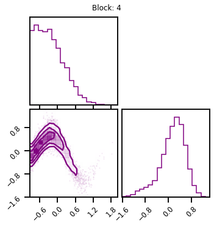
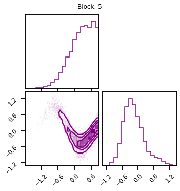
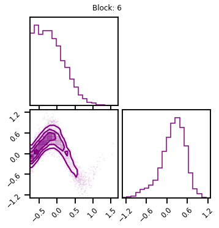
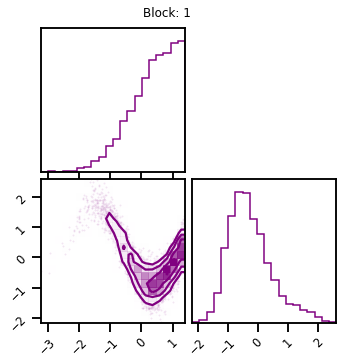
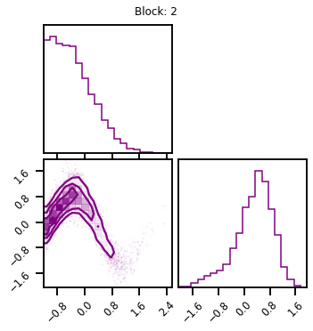
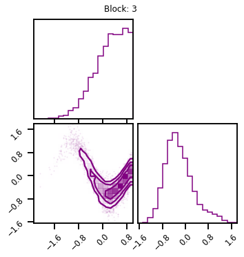
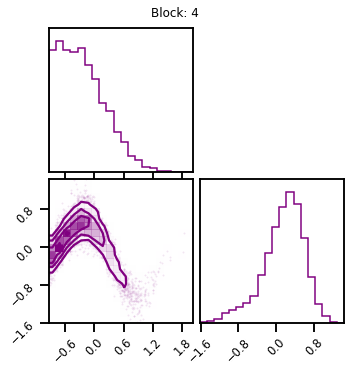
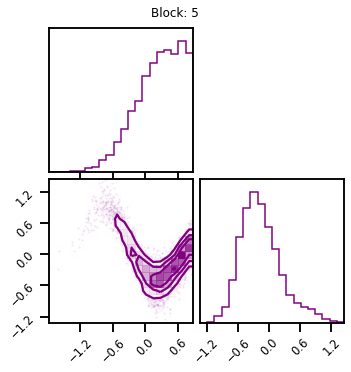
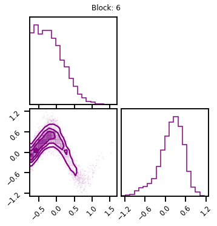
Trained Model¶
X_g = X.copy()
fig = corner.corner(X_g, color="purple")
fig.suptitle("Initial")
plt.show()
for ilayer, ibijector in enumerate(final_bijector.bijectors):
X_g = ibijector.forward(X_g)
if (ilayer + 1) % 3 == 0:
fig = corner.corner(X_g, color="purple")
fig.suptitle(f"Block: {(ilayer+1)//3}")
plt.show()
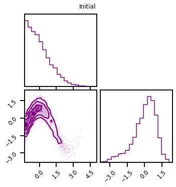
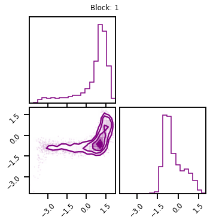
 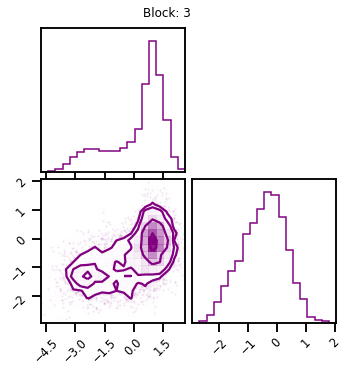
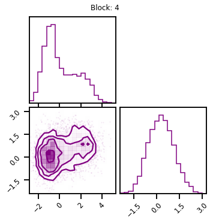
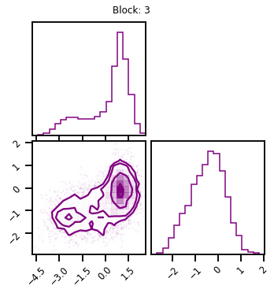
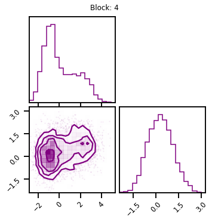
 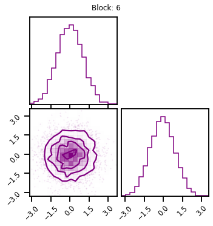
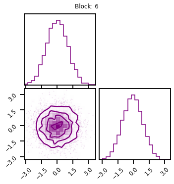
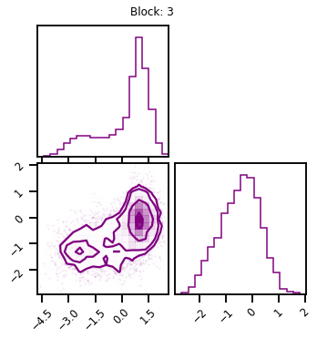
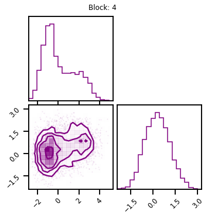
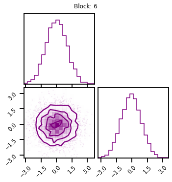
fig, ax = plt.subplots()
ax.scatter(X_g[:, 0], X_g[:, 1], s=3)
ax.set_aspect("equal", "box")
plt.tight_layout()
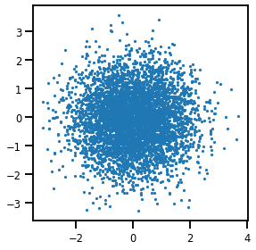